占事：000727华东科技今天涨跌
公历起卦时间：2016年2月18日8时28分 (电脑自动)
干支：丙申年 庚寅月 庚午日 庚辰时 （日空：戌亥）
兑宫：水山蹇 艮宫：风山渐 (归魂)
六神 伏神 本 卦 变 卦
腾蛇 子孙戊子水 ▅▅ ▅▅ ╳→ 妻财辛卯木 ▅▅▅▅▅ 应
勾陈 父母戊戌土 ▅▅▅▅▅ 官鬼辛巳火 ▅▅▅▅▅
朱雀 兄弟戊申金 ▅▅ ▅▅ 世 父母辛未土 ▅▅ ▅▅
青龙 兄弟丙申金 ▅▅▅▅▅ 兄弟丙申金 ▅▅▅▅▅ 世
玄武 妻财丁卯木 官鬼丙午火 ▅▅ ▅▅ 官鬼丙午火 ▅▅ ▅▅
白虎 父母丙辰土 ▅▅ ▅▅ 应 父母丙辰土 ▅▅ ▅▅
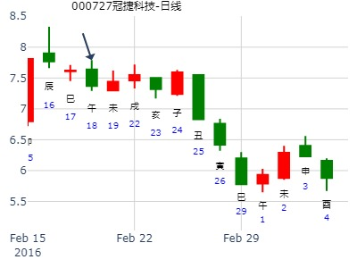
T-Z-D上证指数擂台赛第七场第4局（2020年2月20日）Z方
公历起卦时间：2020年2月20日9时9分 (手工指定)
干支：庚子年 戊寅月 癸巳日 丁巳时 （日空：午未）
神煞：驿马－亥 桃花－午 日禄－子 贵人－卯，巳
兑宫：水山蹇 艮宫：风山渐 (归魂)
六神 伏神 本 卦 变 卦
白虎 子孙戊子水 ▅▅ ▅▅ ╳→ 妻财辛卯木 ▅▅▅▅▅ 应
螣蛇 父母戊戌土 ▅▅▅▅▅ 官鬼辛巳火 ▅▅▅▅▅
勾陈 兄弟戊申金 ▅▅ ▅▅ 世 父母辛未土 ▅▅ ▅▅
朱雀 兄弟丙申金 ▅▅▅▅▅ 兄弟丙申金 ▅▅▅▅▅ 世
青龙 妻财丁卯木 官鬼丙午火 ▅▅ ▅▅ 官鬼丙午火 ▅▅ ▅▅
玄武 父母丙辰土 ▅▅ ▅▅ 应 父母丙辰土 ▅▅ ▅▅
关键：空下伏神，易于引拔。
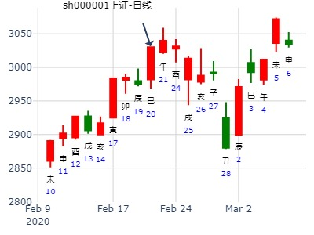
占事：试测上证3.9丙辰二-3.12己未五哪日顶？
排卦：元亨利贞网
公历起卦时间：2021年3月10日8时22分 (电脑自动)
干支：辛丑年 辛卯月 丁巳日 甲辰时 （日空：子丑）
神煞：驿马－亥 桃花－午 日禄－午 贵人－酉，亥
兑宫：水山蹇 艮宫：风山渐 (归魂)
六神 伏神 本 卦 变 卦
青龙 子孙戊子水 ▅▅ ▅▅ ╳→ 妻财辛卯木 ▅▅▅▅▅ 应
玄武 父母戊戌土 ▅▅▅▅▅ 官鬼辛巳火 ▅▅▅▅▅
白虎 兄弟戊申金 ▅▅ ▅▅ 世 父母辛未土 ▅▅ ▅▅
螣蛇 兄弟丙申金 ▅▅▅▅▅ 兄弟丙申金 ▅▅▅▅▅ 世
勾陈 妻财丁卯木 官鬼丙午火 ▅▅ ▅▅ 官鬼丙午火 ▅▅ ▅▅
朱雀 父母丙辰土 ▅▅ ▅▅ 应 父母丙辰土 ▅▅ ▅▅
动爻旬空被冲就是发动。冲动。

梅花小孩：周四时空数理卦求证 2781
主题：时空数理卦求证 2781
庚子 己卯 丁卯 戊申 (戌亥空)
庚子年三月初二(2020/03/25 15:31:40)
水山蹇 风山渐
青龙 子孙子水 × 妻财卯木 ／ 应
玄武 父母戌土 ／ 官鬼巳火 ／
白虎 兄弟申金 ∥ 兑 父母未土 ∥
腾蛇 兄弟申金 ／ 兄弟申金 ／ 艮
妻财卯木：勾陈 官鬼午火 ∥ 官鬼午火 ∥
朱雀 父母辰土 ∥ 应 父母辰土 ∥
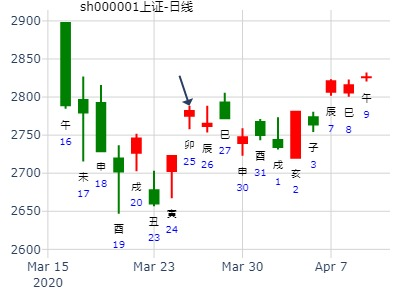
主题：上海股市大盘下周涨跌如何？
丁亥 癸卯 戊午 丙辰 (子丑空)
丁亥年二月初七(2007/03/25 07:55:51)
水山蹇 风山渐
朱雀 子孙子水 × 妻财卯木 ／ 应
青龙 父母戌土 ／ 官鬼巳火 ／
玄武 兄弟申金 ∥ 世 父母未土 ∥
白虎 兄弟申金 ／ 兄弟申金 ／ 世妻财卯木：
腾蛇 官鬼午火 ∥ 官鬼午火 ∥
勾陈 父母辰土 ∥ 应 父母辰土 ∥
动爻旬空被冲，论实动。
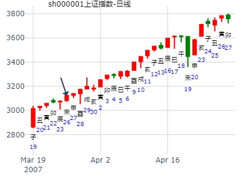
2017年4月大盘涨跌卦
占事：2017年4月大盘涨跌
公历起卦时间：2017年3月31日15时51分 (手工指定)
干支：丁酉年 癸卯月 丁巳日 戊申时 （日空：子丑）
神煞：驿马－亥 桃花－午 日禄－午 贵人－酉，亥
兑宫：水山蹇 艮宫：风山渐 (归魂)
六神 伏神 本 卦 变 卦
青龙 子孙戊子水 ▅▅ ▅▅ ╳→ 妻财辛卯木 ▅▅▅▅▅ 应
玄武 父母戊戌土 ▅▅▅▅▅ 官鬼辛巳火 ▅▅▅▅▅
白虎 兄弟戊申金 ▅▅ ▅▅ 世 父母辛未土 ▅▅ ▅▅
腾蛇 兄弟丙申金 ▅▅▅▅▅ 兄弟丙申金 ▅▅▅▅▅ 世
勾陈 妻财丁卯木 官鬼丙午火 ▅▅ ▅▅ 官鬼丙午火 ▅▅ ▅▅
朱雀 父母丙辰土 ▅▅ ▅▅ 应 父母丙辰土 ▅▅ ▅▅
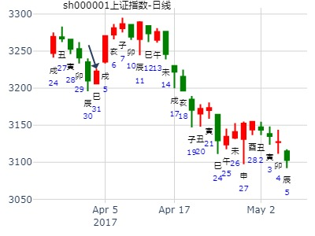
占事：天山股份4月。ytang
2017年4月2日11时41分 (手工指定)
干支：丁酉年 癸卯月 己未日 庚午时 （日空：子丑）
兑宫：水山蹇 艮宫：风山渐 (归魂)
六神 伏神 本 卦 变 卦
勾陈 子孙戊子水 ▅▅ ▅▅ ╳→ 妻财辛卯木 ▅▅▅▅▅ 应
朱雀 父母戊戌土 ▅▅▅▅▅ 官鬼辛巳火 ▅▅▅▅▅
青龙 兄弟戊申金 ▅▅ ▅▅ 世 父母辛未土 ▅▅ ▅▅
玄武 兄弟丙申金 ▅▅▅▅▅ 兄弟丙申金 ▅▅▅▅▅ 世
白虎 妻财丁卯木 官鬼丙午火 ▅▅ ▅▅ 官鬼丙午火 ▅▅ ▅▅
腾蛇 父母丙辰土 ▅▅ ▅▅ 应 父母丙辰土 ▅▅ ▅▅
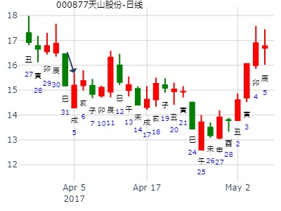
占事：4月17日上证行情预测
起卦方式：电脑自动
起卦时间：2008年04月16日20时52分
干支：戊子年 丙辰月 丙戌日 戊戌时 （午未空）
六神 伏神 兑宫：水山蹇 艮宫：风山渐（归魂）
【本 卦】 【变 卦】
青龙 ▅▅ ▅▅ 子孙戊子水 → ▅▅▅▅▅ 妻财辛卯木 应
玄武 ▅▅▅▅▅ 父母戊戌土 ▅▅▅▅▅ 官鬼辛巳火
白虎 ▅▅ ▅▅ 兄弟戊申金 世 ▅▅ ▅▅ 父母辛未土
滕蛇 ▅▅▅▅▅ 兄弟丙申金 ▅▅▅▅▅ 兄弟丙申金 世
勾陈 妻财丁卯木 ▅▅ ▅▅ 官鬼丙午火 ▅▅ ▅▅ 官鬼丙午火
朱雀 ▅▅ ▅▅ 父母丙辰土 应 ▅▅ ▅▅ 父母丙辰土
子日冲了空的午火，跌。
经典：本来子日要涨，可是午火旬空，把飞神冲实了，伏神出不来，跌。
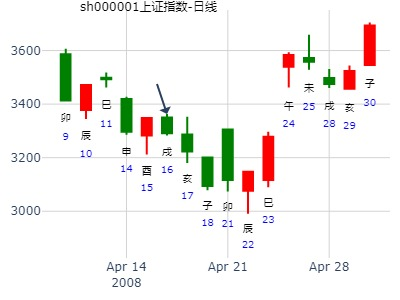
占事：5月5-9日大盘涨跌?
公历时间：2008年4月30日15时8分 星期三
农历时间：戊子年三月廿五申时
干支：戊子年 丙辰月 庚子日 甲申时 (旬空：辰巳)
神煞：驿马—寅 桃花—酉 日禄—申 贵人—寅，午
兑宫：水山蹇 艮宫：风山渐（归魂）
六神 伏 神 【本 卦】 【变 卦】
螣蛇 ▅▅ ▅▅ 子孙戊子水 ×→ ▅▅▅▅▅ 妻财辛卯木 应
勾陈 ▅▅▅▅▅ 父母戊戌土 ▅▅▅▅▅ 官鬼辛巳火
朱雀 ▅▅ ▅▅ 兄弟戊申金 世 ▅▅ ▅▅ 父母辛未土
青龙 ▅▅▅▅▅ 兄弟丙申金 ▅▅▅▅▅ 兄弟丙申金 世
玄武 妻财丁卯木 ▅▅ ▅▅ 官鬼丙午火 ▅▅ ▅▅ 官鬼丙午火
白虎 ▅▅ ▅▅ 父母丙辰土 应 ▅▅ ▅▅ 父母丙辰土
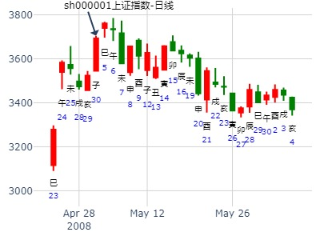
占事：600718东软5月下半月走势？
公历起卦时间：2015年5月18日9时28分 (在线摇卦)
干支：乙未年 辛巳月 甲午日 己巳时 （日空：辰巳）
兑宫：水山蹇 艮宫：风山渐 (归魂)
六神 伏神 本 卦 变 卦
玄武 子孙戊子水 ▅▅ ▅▅ ╳→ 妻财辛卯木 ▅▅▅▅▅ 应
白虎 父母戊戌土 ▅▅▅▅▅ 官鬼辛巳火 ▅▅▅▅▅
腾蛇 兄弟戊申金 ▅▅ ▅▅ 世 父母辛未土 ▅▅ ▅▅
勾陈 兄弟丙申金 ▅▅▅▅▅ 兄弟丙申金 ▅▅▅▅▅ 世
朱雀 妻财丁卯木 官鬼丙午火 ▅▅ ▅▅ 官鬼丙午火 ▅▅ ▅▅
青龙 父母丙辰土 ▅▅ ▅▅ 应 父母丙辰土 ▅▅ ▅▅
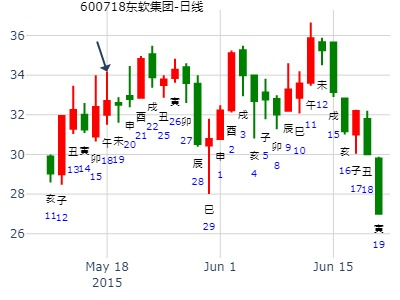
蹇之渐，往蹇来硕。子孙化妻财。先跌后涨。
公历：2001年6月14日12时26分 星期四 则次日及下周大盘
干支：辛巳年 甲午月 戊申日 戊午时
旬空：申酉 辰巳 寅卯 子丑
午月 戊申日 （旬空：寅卯）
兑：水山蹇 艮：风山渐(归魂)
伏 神 【本 卦】 【变 卦】
▅▅ ▅▅ 子孙子水 ×→ ▅▅▅▅▅ 妻财卯木 应
▅▅▅▅▅ 父母戌土 ▅▅▅▅▅ 官鬼巳火
▅▅ ▅▅ 兄弟申金 世 ▅▅ ▅▅ 父母未土
▅▅▅▅▅ 兄弟申金 ▅▅▅▅▅ 兄弟申金 世
妻财卯木 ▅▅ ▅▅ 官鬼午火 ▅▅ ▅▅ 官鬼午火
▅▅ ▅▅ 父母辰土 应 ▅▅ ▅▅ 父母辰土
分析：飞神被冲暗动。
1。子日股价大跌。月破多方值日何以下跌？
此因一是股价卯木空而受生力量不大；二是卯木太弱，子卯相刑；
三是下跌最大原因，官旺被子冲暗动。
2。卯日大涨。股价卯木出空值日。
3。辰日构成申子辰三合多方局。多方不破而推动股价大涨。
马后炮：
1。 丑日补合月破之子水，使子水有力。而触底止跌。
2。 未日合绊暗动之午火。涨。
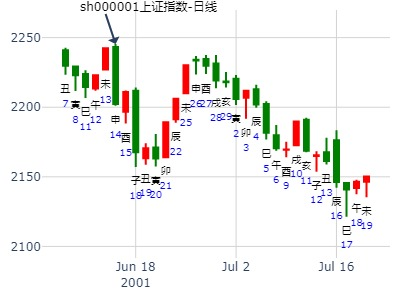
占事:上证趋势 起卦方式：手动摇卦
公历时间：2007年6月17日22时38分
干 支：丁亥年 丙午月 壬午日 辛亥时
旬 空：午未 寅卯 申酉 寅卯
兑宫：水山蹇 艮宫：风山渐（归魂）
六神 伏 神 【本 卦】 【变 卦】
白虎 ▄▄ ▄▄ 子孙戊子水 X-> ▄▄▄▄▄ 妻财辛卯木 应
螣蛇 ▄▄▄▄▄ 父母戊戌土 ▄▄▄▄▄ 官鬼辛巳火
勾陈 ▄▄ ▄▄ 兄弟戊申金 世 ▄▄ ▄▄ 父母辛未土
朱雀 ▄▄▄▄▄ 兄弟丙申金 ▄▄▄▄▄ 兄弟丙申金 世
青龙 妻财丁卯木 ▄▄ ▄▄ 官鬼丙午火 ▄▄ ▄▄ 官鬼丙午火
玄武 ▄▄ ▄▄ 父母丙辰土 应 ▄▄ ▄▄ 父母丙辰土
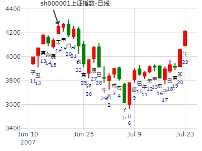
上证指数7月份吉凶-高岛法-王
时间: 2024-06-28
干支: 甲辰年庚午月癸亥日 (旬空: 子丑 )
水山蹇 风山渐(归魂)
六神 伏神 本 卦 变 卦
白虎 ▅▅ ▅▅ 子孙子水 Ｘ→ ▅▅▅▅▅ 妻财卯木 应
腾蛇 ▅▅▅▅▅ 父母戌土 ▅▅▅▅▅ 官鬼巳火
勾陈 ▅▅ ▅▅ 兄弟申金 世 ▅▅ ▅▅ 父母未土
朱雀 ▅▅▅▅▅ 兄弟申金 ▅▅▅▅▅ 兄弟申金 世
青龙 妻财卯木▅▅ ▅▅ 官鬼午火 ▅▅ ▅▅ 官鬼午火
玄武 ▅▅ ▅▅ 父母辰土 应 ▅▅ ▅▅ 父母辰土
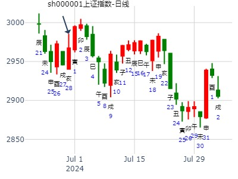
蹇之渐_sh000001
占事: 7月份上证指数-by 五股丰登
时间: 2022-07-01 (9:21)
干支: 壬寅年丙午月乙卯日 (旬空: 子丑 )
水山蹇 风山渐(归魂)
六神 伏神 本 卦 变 卦
玄武 ▅▅ ▅▅ 子孙子水 Ｘ→ ▅▅▅▅▅ 妻财卯木 应
白虎 ▅▅▅▅▅ 父母戌土 ▅▅▅▅▅ 官鬼巳火
腾蛇 ▅▅ ▅▅ 兄弟申金 世 ▅▅ ▅▅ 父母未土
勾陈 ▅▅▅▅▅ 兄弟申金 ▅▅▅▅▅ 兄弟申金 世
朱雀 妻财卯木▅▅ ▅▅ 官鬼午火 ▅▅ ▅▅ 官鬼午火
青龙 ▅▅ ▅▅ 父母辰土 应 ▅▅ ▅▅ 父母辰土
七月大盘，蹇之渐。7月1日9：15。午月卯日。
文件名:七月大盘，蹇之渐，开跌
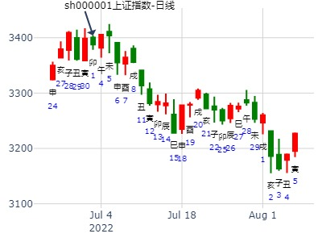
可否有高手帮我解个卦
占事：000725下周走势
起卦方式：手动摇卦
公历时间：2007年7月13日16时1分 星期五
干支：丁亥年 丁未月 戊申日 庚申时 (旬空：寅卯)
神煞：驿马—寅 桃花—酉 日禄—巳 贵人—丑，未
兑宫：水山蹇 艮宫：风山渐（归魂）
六神 伏 神 【本 卦】 【变 卦】
朱雀 ▅▅ ▅▅ 子孙戊子水 ×→ ▅▅▅▅▅ 妻财辛卯木 应
青龙 ▅▅▅▅▅ 父母戊戌土 ▅▅▅▅▅ 官鬼辛巳火
玄武 ▅▅ ▅▅ 兄弟戊申金 世 ▅▅ ▅▅ 父母辛未土
白虎 ▅▅▅▅▅ 兄弟丙申金 ▅▅▅▅▅ 兄弟丙申金 世
螣蛇 妻财丁卯木 ▅▅ ▅▅ 官鬼丙午火 ▅▅ ▅▅ 官鬼丙午火
勾陈 ▅▅ ▅▅ 父母丙辰土 应 ▅▅ ▅▅ 父母丙辰土
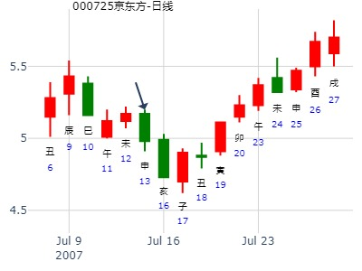
占事：7月16日大盘
公历时间：2015年7月15日15时20分????
干 支：乙未年?癸未月?壬辰日?戊申时
旬 空：辰巳???申酉???(午未)???寅卯??
兑宫：水山蹇 艮宫：风山渐（归魂）?
六神? 伏 神?【本 卦】 【变 卦】
白虎 ▄▄??▄▄ 子孙戊子水 X->? ▄▄▄▄▄ 妻财辛卯木 应
螣蛇 ▄▄▄▄▄ 父母戊戌土 ▄▄▄▄▄ 官鬼辛巳火
勾陈 ▄▄??▄▄ 兄弟戊申金 世 ▄▄??▄▄ 父母辛未土
朱雀 ▄▄▄▄▄ 兄弟丙申金 ▄▄▄▄▄ 兄弟丙申金 世
青龙 妻财丁卯木 ▄▄??▄▄ 官鬼丙午火 ▄▄??▄▄ 官鬼丙午火
玄武 ▄▄??▄▄ 父母丙辰土 应 ▄▄??▄▄ 父母丙辰土
上六：往蹇来硕，吉；利见大人。
象曰：往蹇来硕，志在内也。?利见大人，以从贵也。
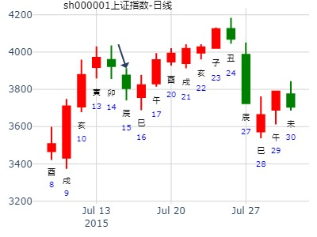
占事：7.15大盘
起卦方式：手动摇卦
公历时间：2016年7月15日9时30分
干 支：丙申年 乙未月 戊戌日 丁巳时
旬 空：辰巳 辰巳 辰巳 子丑
神 煞：驿马─申 桃花─卯 日禄─巳 贵人─丑，未
兑宫：水山蹇 艮宫：风山渐（归魂）
六神 伏 神 【本 卦】 【变 卦】
朱雀 ▄▄ ▄▄ 子孙戊子水 × ▄▄▄▄▄ 妻财辛卯木 应
青龙 ▄▄▄▄▄ 父母戊戌土 ▄▄▄▄▄ 官鬼辛巳火
玄武 ▄▄ ▄▄ 兄弟戊申金 世 ▄▄ ▄▄ 父母辛未土
白虎 ▄▄▄▄▄ 兄弟丙申金 ▄▄▄▄▄ 兄弟丙申金 世
螣蛇 妻财丁卯木 ▄▄ ▄▄ 官鬼丙午火 ▄▄ ▄▄ 官鬼丙午火
勾陈 ▄▄ ▄▄ 父母丙辰土 应 ▄▄ ▄▄ 父母丙辰土
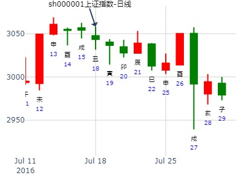
8月15-19日大盘涨跌卦
占事：8月15-19日大盘涨跌？
公历起卦时间：2011年8月12日16时39分 (手工指定)
干支：辛卯年 丙申月 己亥日 壬申时 （日空：辰巳）
神煞：驿马－巳 桃花－子 日禄－午 贵人－子，申
兑宫：水山蹇 艮宫：风山渐 (归魂)
六神 伏神 本 卦 变 卦
勾陈 子孙戊子水 ▅▅ ▅▅ ╳→ 妻财辛卯木 ▅▅▅▅▅ 应
朱雀 父母戊戌土 ▅▅▅▅▅ 官鬼辛巳火 ▅▅▅▅▅
青龙 兄弟戊申金 ▅▅ ▅▅ 世 父母辛未土 ▅▅ ▅▅
玄武 兄弟丙申金 ▅▅▅▅▅ 兄弟丙申金 ▅▅▅▅▅ 世
白虎 妻财丁卯木 官鬼丙午火 ▅▅ ▅▅ 官鬼丙午火 ▅▅ ▅▅
腾蛇 父母丙辰土 ▅▅ ▅▅ 应 父母丙辰土 ▅▅ ▅▅
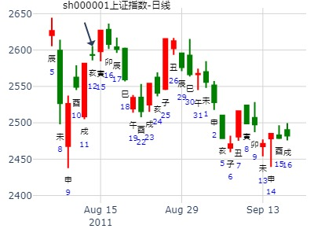
2020年8月20日上证指数擂台赛第30场第4局-Z方（日测)
数理卦
公历起卦时间：2020年8月20日2时34分 (手工指定)
干支：庚子年 甲申月 乙未日 丁丑时 （日空：辰巳）
神煞：驿马－巳 桃花－子 日禄－卯 贵人－子，申
兑宫：水山蹇 艮宫：风山渐 (归魂)
六神 伏神 本 卦 变 卦
玄武 子孙戊子水 ▅▅ ▅▅ ╳→ 妻财辛卯木 ▅▅▅▅▅ 应
白虎 父母戊戌土 ▅▅▅▅▅ 官鬼辛巳火 ▅▅▅▅▅
螣蛇 兄弟戊申金 ▅▅ ▅▅ 世 父母辛未土 ▅▅ ▅▅
勾陈 兄弟丙申金 ▅▅▅▅▅ 兄弟丙申金 ▅▅▅▅▅ 世
朱雀 妻财丁卯木 官鬼丙午火 ▅▅ ▅▅ 官鬼丙午火 ▅▅ ▅▅
青龙 父母丙辰土 ▅▅ ▅▅ 应 父母丙辰土 ▅▅ ▅▅
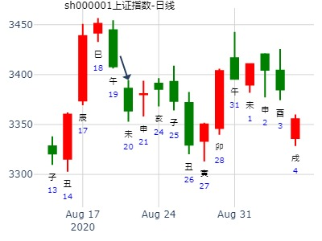
2020年9月14日上证指数擂台赛第34场第1局-Z方（日测)
公历起卦时间：2020年9月14日1时35分 (手工指定)
干支：庚子年 乙酉月 庚申日 丁丑时 （日空：子丑）
神煞：驿马－寅 桃花－酉 日禄－申 贵人－丑，未
兑宫：水山蹇 艮宫：风山渐 (归魂)
六神 伏神 本 卦 变 卦
螣蛇 子孙戊子水 ▅▅ ▅▅ ╳→ 妻财辛卯木 ▅▅▅▅▅ 应
勾陈 父母戊戌土 ▅▅▅▅▅ 官鬼辛巳火 ▅▅▅▅▅
朱雀 兄弟戊申金 ▅▅ ▅▅ 世 父母辛未土 ▅▅ ▅▅
青龙 兄弟丙申金 ▅▅▅▅▅ 兄弟丙申金 ▅▅▅▅▅ 世
玄武 妻财丁卯木 官鬼丙午火 ▅▅ ▅▅ 官鬼丙午火 ▅▅ ▅▅
白虎 父母丙辰土 ▅▅ ▅▅ 应 父母丙辰土 ▅▅ ▅▅
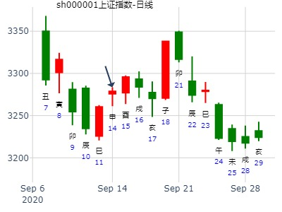
新联电子11.3收盘走势？
排卦：元亨利贞网
公历起卦时间：2021年11月3日8时30分 (电脑自动)
干支：辛丑年 戊戌月 乙卯日 庚辰时 （日空：子丑）
神煞：驿马－巳 桃花－子 日禄－卯 贵人－子，申
兑宫：水山蹇 艮宫：风山渐 (归魂)
六神 伏神 本 卦 变 卦
玄武 子孙戊子水 ▅▅ ▅▅ ╳→ 妻财辛卯木 ▅▅▅▅▅ 应
白虎 父母戊戌土 ▅▅▅▅▅ 官鬼辛巳火 ▅▅▅▅▅
螣蛇 兄弟戊申金 ▅▅ ▅▅ 世 父母辛未土 ▅▅ ▅▅
勾陈 兄弟丙申金 ▅▅▅▅▅ 兄弟丙申金 ▅▅▅▅▅ 世
朱雀 妻财丁卯木 官鬼丙午火 ▅▅ ▅▅ 官鬼丙午火 ▅▅ ▅▅
青龙 父母丙辰土 ▅▅ ▅▅ 应 父母丙辰土 ▅▅ ▅▅ 破？

女 占事：测子月上证K线趋势
蹇之渐，月卦。跌。
公历起卦时间：2009年11月29日15时6分 (手工指定)
干支：己丑年 乙亥月 戊寅日 庚申时 （日空：申酉）
兑宫：水山蹇 艮宫：风山渐 (归魂)
六神 伏神 本 卦 变 卦
朱雀 子孙戊子水 ▅▅ ▅▅ ╳→ 妻财辛卯木 ▅▅▅▅▅ 应
青龙 父母戊戌土 ▅▅▅▅▅ 官鬼辛巳火 ▅▅▅▅▅
玄武 兄弟戊申金 ▅▅ ▅▅ 世 父母辛未土 ▅▅ ▅▅
白虎 兄弟丙申金 ▅▅▅▅▅ 兄弟丙申金 ▅▅▅▅▅ 世
腾蛇 妻财丁卯木 官鬼丙午火 ▅▅ ▅▅ 官鬼丙午火 ▅▅ ▅▅
勾陈 父母丙辰土 ▅▅ ▅▅ 应 父母丙辰土 ▅▅ ▅▅
大跌之卦。蹇卦，大凶卦之一。 虽子化财，但在六位，且水旺，用旺极转阴要下跌。
先蹇，再蹇之极，先跌再涨。
子卯相刑，涨涨跌跌。跌半段涨半段。逢寅卯日涨涨。兄弟出空的申日大跌。不好判断。难。
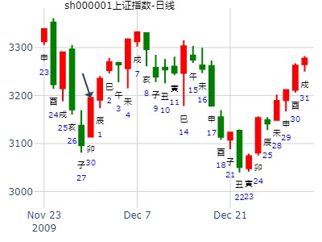